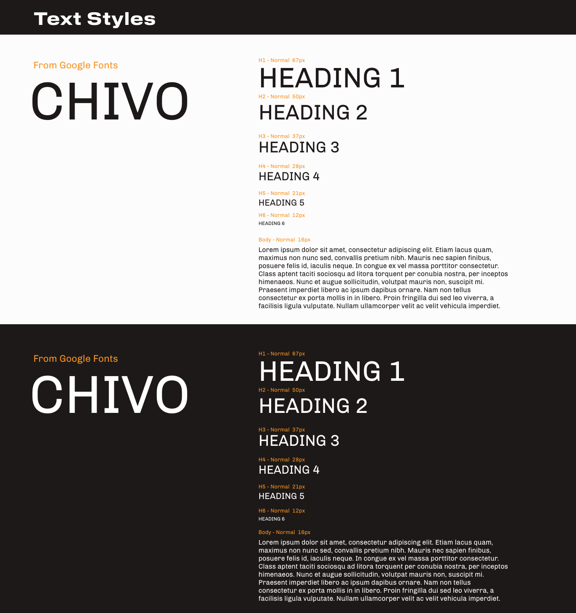

Overconsumption
Project 2 - Cart 211
Proposal
Moodboard
Sketches
Typography

Color palette
Inspiration - CSS Effects
Mouse Follow - Allo Prof
Button hover - KIKK Festival
Kinetic Type Scroll - Area 57
Hover Colors - New York times
Inspiration - Art direction
Space
MAD Brussels
Taiwan Design Research
New York Times
Forensic Architecture News